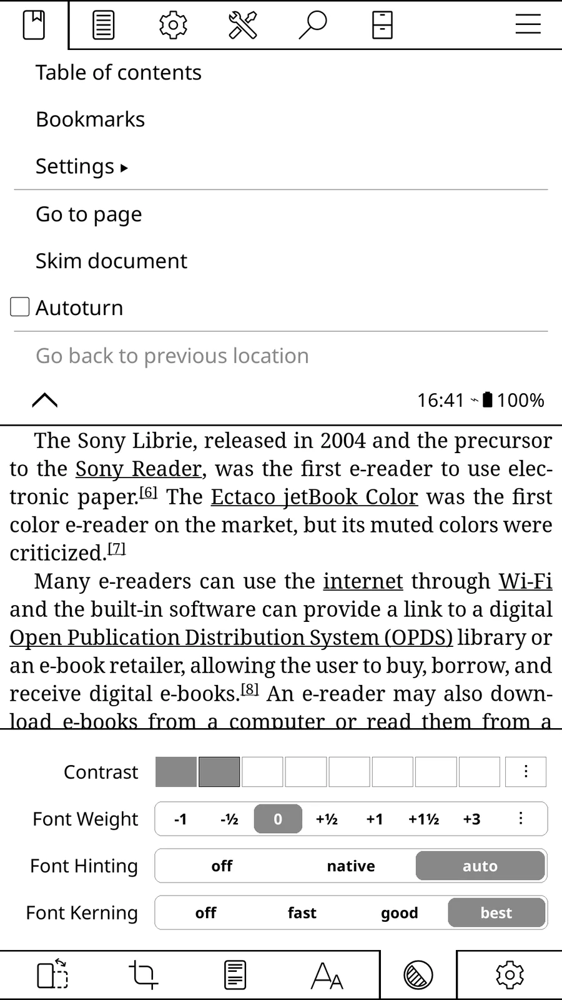

WinterBreak ↗
为受支持的 Kindle 提供安装社区软件的前置解锁入口。
先看你的设备官方 jailbreak 指南明确支持的 Kindle 型号/固件组合
别忽略 它是基础设施，不是单独完成信息屏或 AI 改造的方案。
仓库未归档权限解锁
先确认你手里的确切设备和固件，再决定是否值得尝试 KOReader 或其他改造；“Paperwhite”这个系列名不足以选刷机方法。
C01 · 资料核查 2026-10-21 · 未进行实机测试
在 Kindle 的“设置 → 设备选项 → 设备信息”记录界面显示的设备名称、代数（如有）和软件版本。不同版本菜单名称可能略有差异；拿 Amazon 的型号识别页核对外观与代数。只写“Kindle”或“Paperwhite”不足以判断兼容性。
如需用 KindleModding 的选择器，先在自己的设备上读取序列号前八位，并只在该工具中输入。公开求助帖不要贴完整序列号、账号或含设备唯一标识的截图；贴出型号、代数与固件即可。
抄录设备信息中的当前软件版本，并注明查看日期。Amazon 的软件更新页可用于再次核对设备代数和官方更新；页面列出的最新版不是你设备当前版本。
不要先更新再找改造方法。可用方法会随型号与固件变化；KindleModding 的选择器要求输入设备和固件，还会询问注册、广告等条件。若找不到与你完全对应的路线，就停在只读核查，不把相近机型经验当成支持声明。
如果目标只是继续阅读原有内容，先确认是否真的需要改造。若目标是 KOReader，阅读其当前 Kindle 安装文档，确认对应设备、启动器及前置条件；成功越狱不等于 KOReader 已可运行。
WinterBreak 是越狱前置工具之一，不是阅读器，也不是所有 Kindle/固件的通用入口。先让当前的选择器给出路线，再读该路线的原始说明、例外和恢复信息。不要把旧教程中的固件范围当成永久有效。
备份个人文件与配置，记录当前固件、目标用途、上游工具版本、来源链接和可能的回退步骤。KindleModding FAQ 提醒：已越狱设备的重置、更新和移除越狱有顺序要求；不要把“恢复出厂设置”当作万能回退。
只要型号、固件、前置条件或恢复路径有一项不清楚，就先不要执行会改写系统的步骤。本站没有对任何 Kindle 做实机测试，也不为特定设备承诺兼容。
为受支持的 Kindle 提供安装社区软件的前置解锁入口。
先看你的设备官方 jailbreak 指南明确支持的 Kindle 型号/固件组合
别忽略 它是基础设施，不是单独完成信息屏或 AI 改造的方案。

延长旧电子书阅读器在多格式阅读、排版与同步方面的用途。
先看你的设备支持的 Kindle、Kobo、PocketBook、Android 阅读设备
别忽略 各平台安装前提不同；Kindle 一般需要可用的 jailbreak。